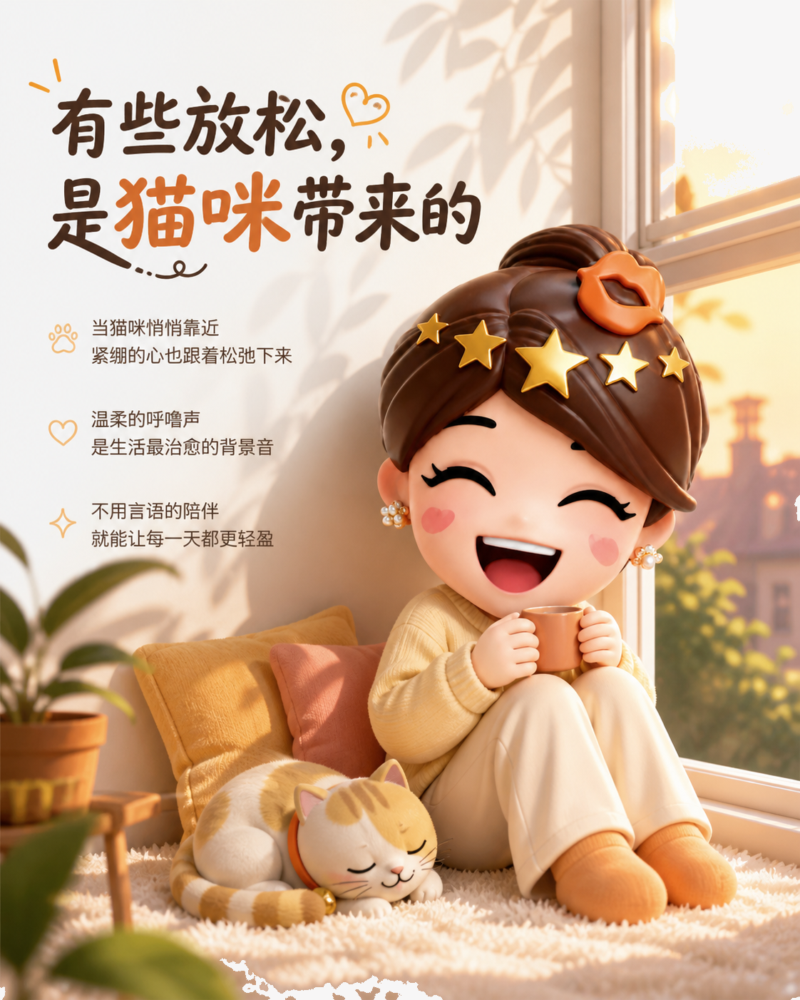
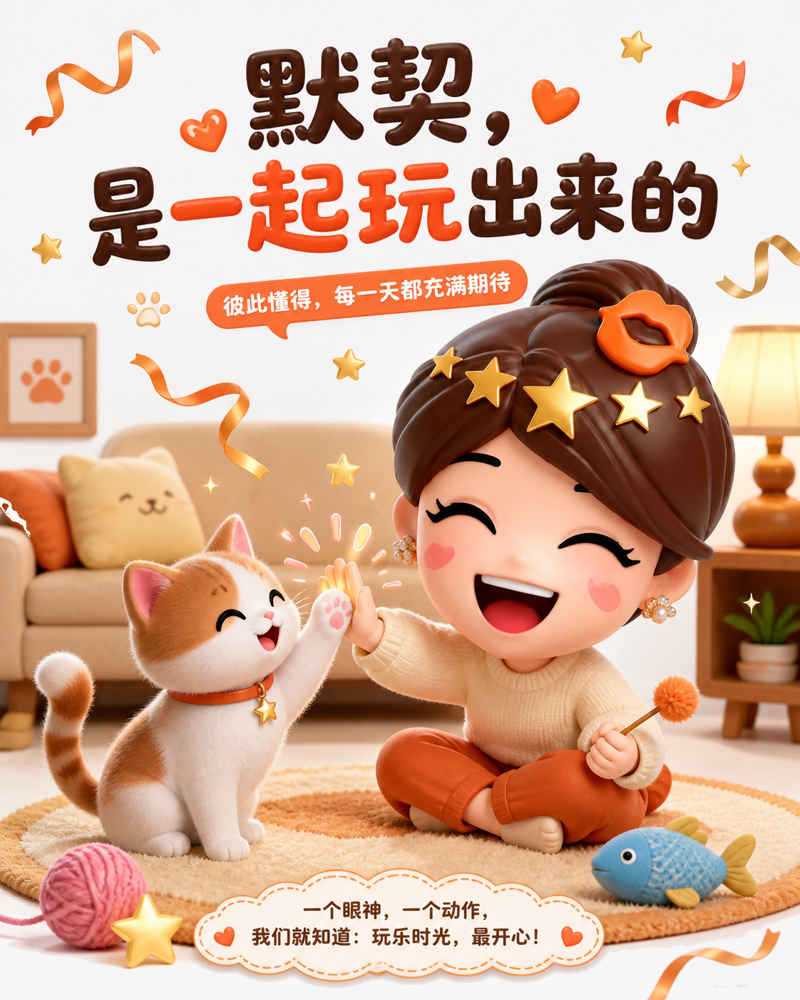

猫咪的回应，是日常里最轻的治愈
猫咪未必会说话，却总能用靠近、回应和玩耍，把普通的一天变得柔软。
先从一份安静的陪伴开始
忙了一天回到家，不必急着安排什么。猫咪在脚边坐下，房间里多了一点呼吸声，人也会慢慢从紧绷里退出来。陪伴的价值，常常不是解决问题，而是让我们暂时不用独自承受。

一个回应，就足够让人开心
当你叫它的名字，它回头；当你打开手机，它凑过来；当你伸出手，它用额头轻轻碰一下。这样细小的回应没有宏大意义，却像生活突然亮起一盏小灯，提醒你：今天也有人在意你的出现。
默契，是一起玩出来的
逗猫棒、纸团、一次追逐，都是彼此熟悉的练习。你读懂它突然竖起的尾巴，它也记住你总会把玩具递到哪里。互动从新鲜变成默契，关系便有了自己的节奏。

真正治愈人的，往往不是大事，而是那些被认真回应的小瞬间。